Lectures in this section
Containers are how AWS runs custom ETL when Lambda's 15-minute limit is too short and a Glue Spark job is the wrong shape. Cross-links: Section 12 (Batch), Section 4 (Glue custom containers), Section 13 (EMR on EKS).
- Introduction to Docker and container fundamentals ~8:00 Slides 609–615
- Amazon ECS — clusters, tasks, services and launch types ~18:00 Slides 616–630
- Amazon ECR — private and public registries ~6:00 Slides 631–635
- Amazon EKS — Kubernetes on AWS ~13:00 Slides 636–643
Docker
Docker is a platform for developing, shipping, and running applications in containers — lightweight, isolated processes that share the host kernel but carry their own filesystem, libraries and dependencies. For a data engineer, Docker is the packaging format behind almost every custom compute option on AWS: you write a Python ETL script, wrap it in a container, push the image to ECR, and Batch, ECS, EKS, Glue or SageMaker runs it without you rebuilding the environment on each platform.
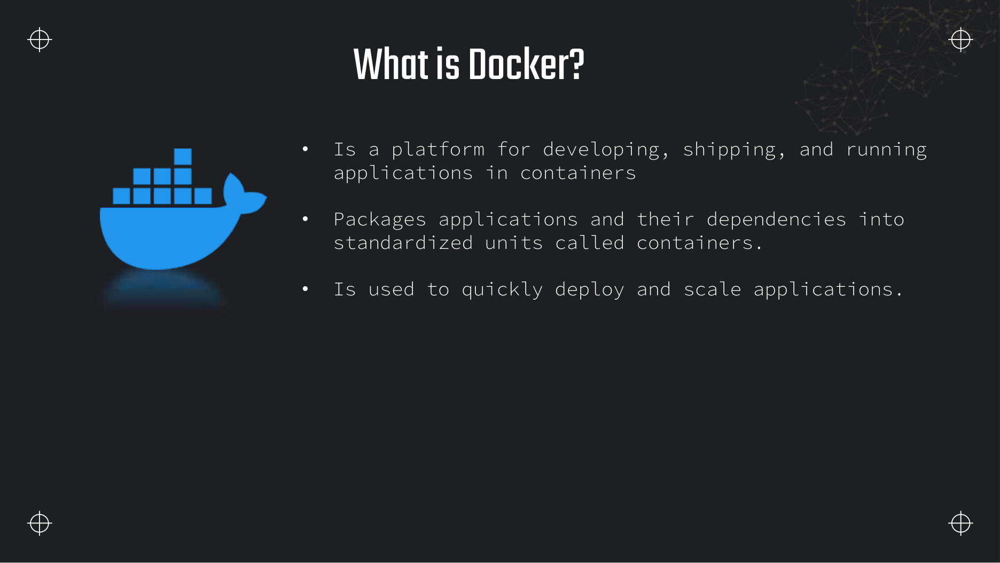
Why containers instead of VMs or bare EC2
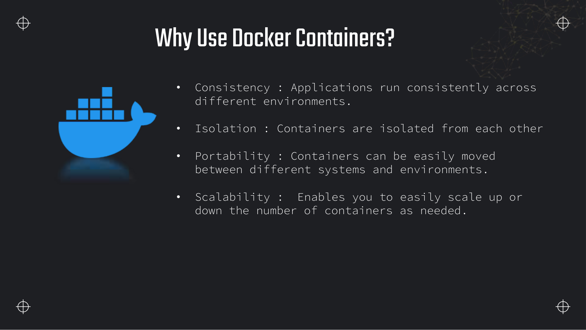
- Consistency — dependencies are baked into the image, so dev, staging and production run the same bytecode.
- Isolation — each container has its own process namespace, network stack and filesystem; one job cannot crash a neighbour's.
- Portability — push once to ECR, pull from ECS in
us-east-1, EKS ineu-west-1, or Batch on Fargate. - Scalability — spin up N identical containers for parallel partition processing; tear them down when the job finishes.
Use cases for data engineering
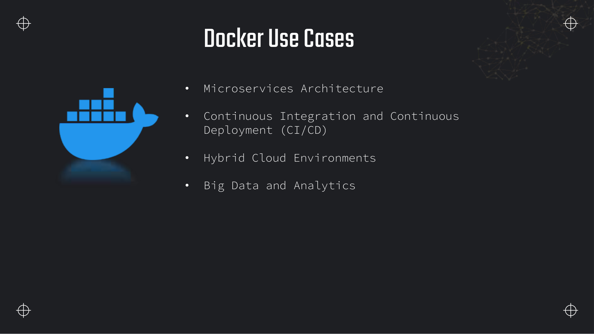
On AWS specifically, containers are the answer when:
- A Lambda function hits the 15-minute limit but the job is not Spark-shaped enough for Glue.
- Glue needs a custom library or runtime — Glue 4.0+ supports bringing your own container image for Spark and Python shell jobs.
- AWS Batch runs array jobs over thousands of files, each in its own container on Spot or Fargate.
- EMR on EKS or SageMaker Processing expects a Docker image as the job definition.
Docker components
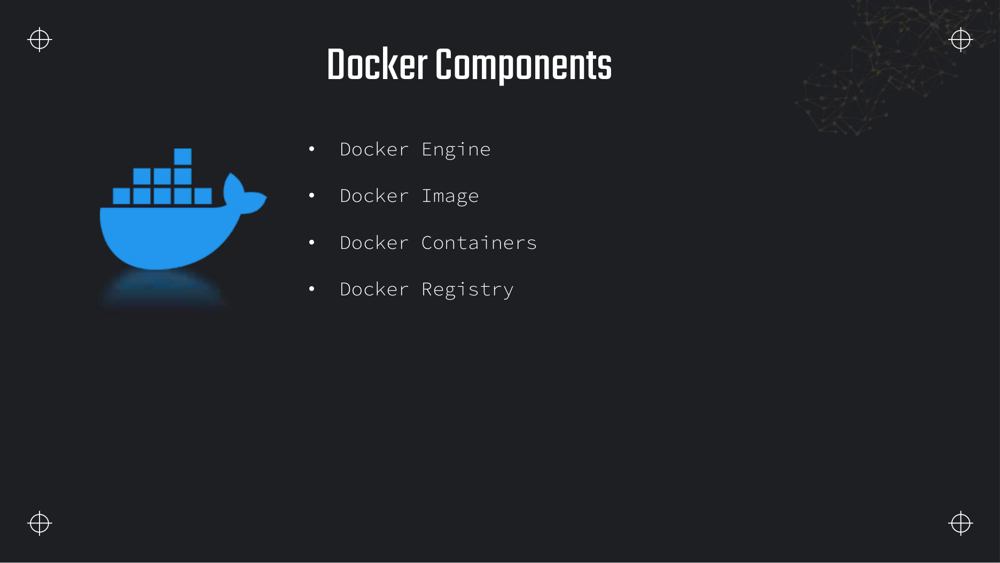
| Component | What it is | Data-engineering example |
|---|---|---|
| Dockerfile | Text recipe: base image, COPY code, RUN pip install, CMD entrypoint | FROM python:3.11-slim + install pandas pyarrow boto3 |
| Image | Read-only template built from a Dockerfile (docker build) | 123456789012.dkr.ecr.us-east-1.amazonaws.com/etl-job:v3 |
| Container | Running instance of an image (docker run) | One Batch job processing s3://bucket/raw/partition=2026-01/ |
| Registry | Store and distribute images (docker push / docker pull) | Amazon ECR (private) or Docker Hub (public base images) |
| Docker Engine / daemon | Background service that builds images and manages container lifecycle | Runs on your laptop, on EC2 container instances, or is abstracted away by Fargate |
Docker registries — Docker Hub and Amazon ECR
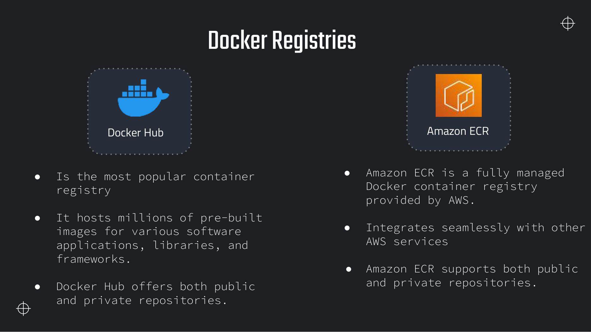
python, openjdk, postgres). ECR is AWS-native, integrates with IAM, and is where production pipeline images should live — ECS, EKS, Batch and Glue pull from it without traversing the public internet.Image versus container — the build lifecycle
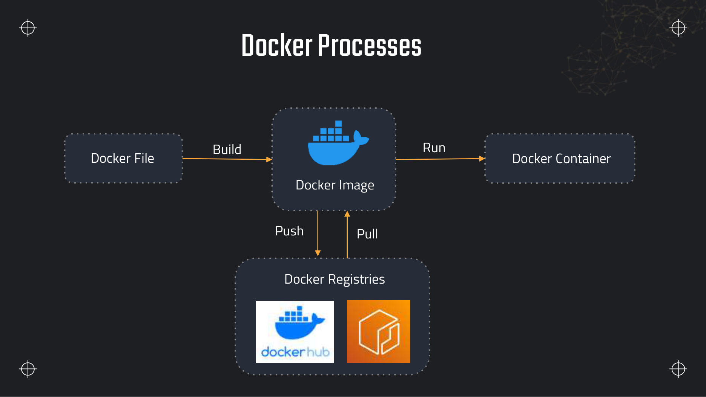
docker build produces an image → docker push stores it in a registry → at runtime the orchestrator docker pulls the image and docker runs a container. Images are immutable and versioned by tag; containers are ephemeral.Example Dockerfile for a Python ETL job
FROM python:3.11-slim
WORKDIR /app
COPY requirements.txt .
RUN pip install --no-cache-dir -r requirements.txt
COPY etl_job.py .
# Batch/ECS pass env vars at runtime; no secrets in the image
ENV AWS_DEFAULT_REGION=us-east-1
CMD ["python", "etl_job.py"]# Build locally
docker build -t dea-etl-job:latest .
# Tag for ECR (repository must already exist)
ACCOUNT=123456789012
REGION=us-east-1
docker tag dea-etl-job:latest \
$ACCOUNT.dkr.ecr.$REGION.amazonaws.com/dea-etl-job:latest
# Authenticate Docker to ECR (token valid ~12 hours)
aws ecr get-login-password --region $REGION | \
docker login --username AWS --password-stdin \
$ACCOUNT.dkr.ecr.$REGION.amazonaws.com
# Push
docker push $ACCOUNT.dkr.ecr.$REGION.amazonaws.com/dea-etl-job:latestAmazon ECS
Amazon Elastic Container Service (ECS) is AWS's native container orchestrator. It schedules containers onto EC2 instances you manage, onto serverless Fargate capacity, or onto on-premises servers (external launch type). For data pipelines, ECS is less common than Batch for pure batch work, but it excels at long-running ingestion services, always-on micro-ETL daemons, and custom streaming processors that need a persistent container with a load balancer in front.
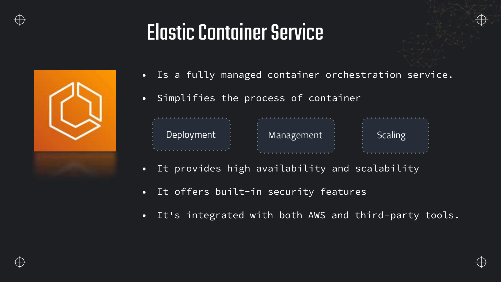
Core terminology
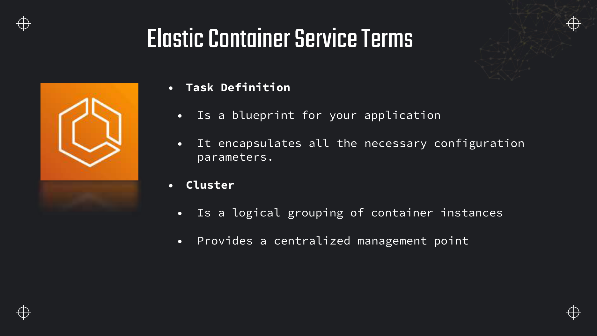
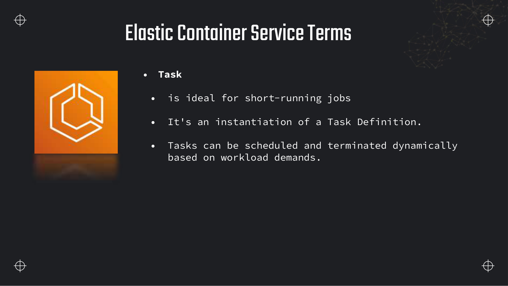
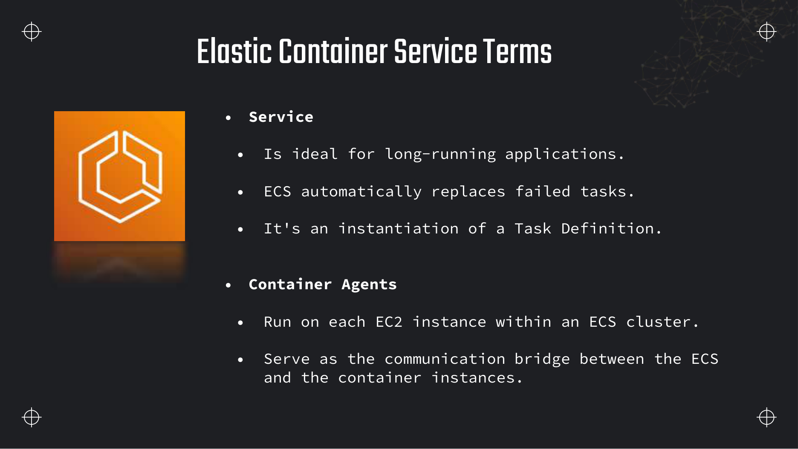
Launch types — EC2, Fargate, and external
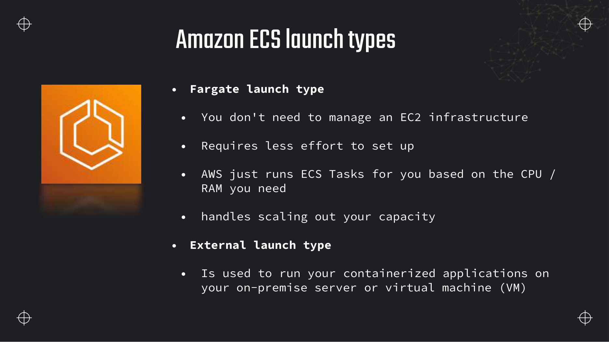
ECS versus EKS versus Fargate — decision table
| Dimension | ECS (EC2) | ECS (Fargate) | EKS |
|---|---|---|---|
| Control | AWS-native API; simpler mental model | Same ECS API, no servers | Full Kubernetes API — pods, CRDs, Helm |
| Operational overhead | Manage EC2, AMIs, scaling | Lowest — task-level billing only | Highest — control plane + nodes (unless Fargate profiles) |
| Ecosystem | AWS integrations first-class | Same | Portable K8s tooling; EMR on EKS, Karpenter |
| When it wins | Sustained high volume, Spot, GPUs, custom networking | Microservices, modest batch, least ops | Existing K8s estate, multi-cloud, Spark on K8s, complex operators |
| Data-engineering fit | Custom long-running consumers | Small containerised ETL services | EMR on EKS, large Spark, ML platforms already on K8s |
Fargate is not a third orchestrator — it is a compute launch type for both ECS and EKS. The exam often lists "ECS, EKS, Fargate" as three options; the correct framing is ECS-on-Fargate versus EKS-on-Fargate versus ECS-on-EC2.
Task placement strategies and constraints (EC2 launch type only)
When ECS places a task on an EC2 container instance, it follows a fixed order. Placement strategies and constraints do not apply to Fargate — AWS chooses the infrastructure for you.
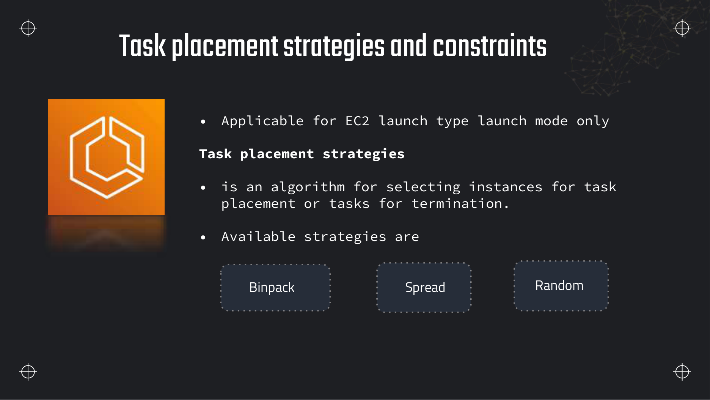
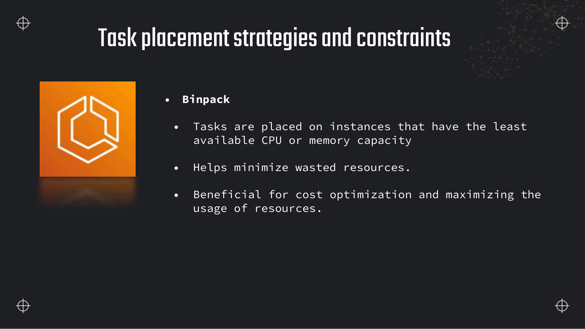
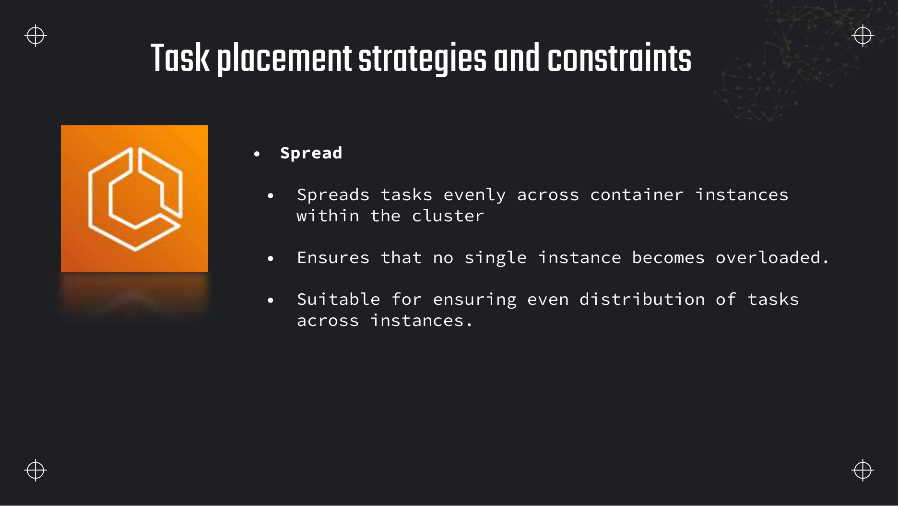
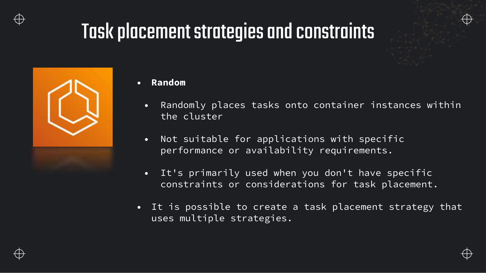
Placement constraints — distinctInstance and memberOf
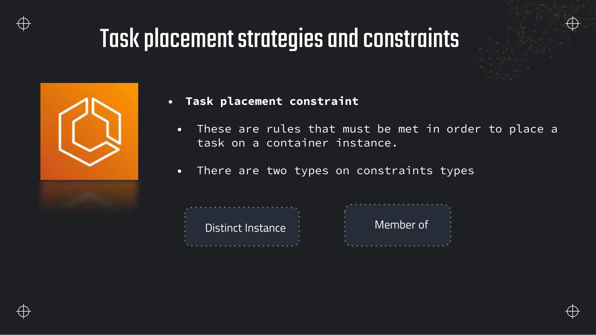
distinctInstance and memberOf.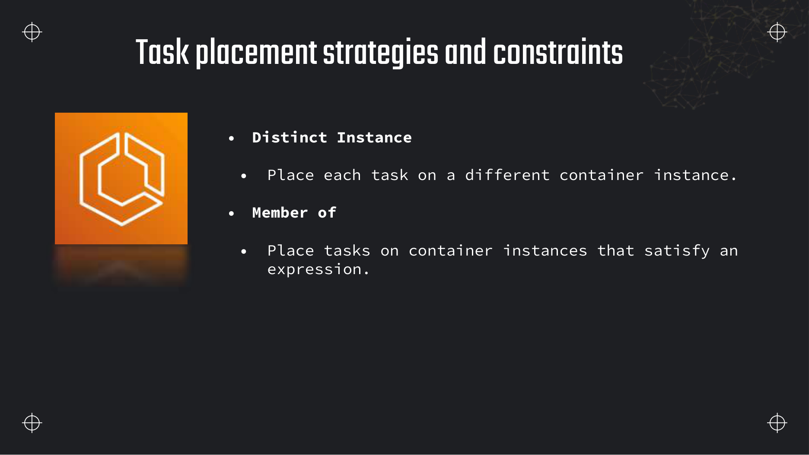
distinctInstance ensures at most one task per instance — useful for singleton jobs or licence-limited software. memberOf uses cluster query language against instance attributes, e.g. attribute:ecs.instance-type == r5.xlarge.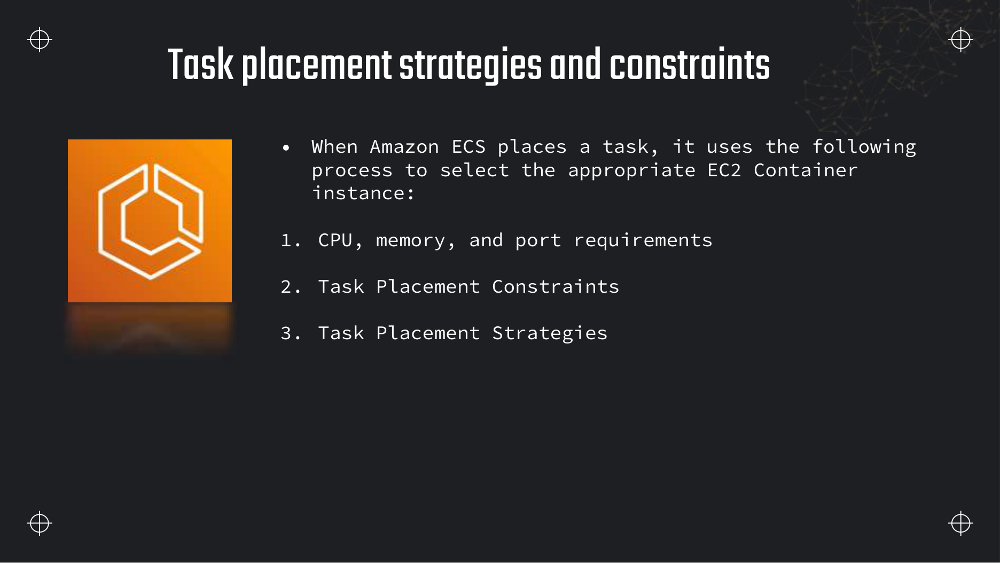
awsvpc mode.IAM roles for ECS — task execution role versus task role
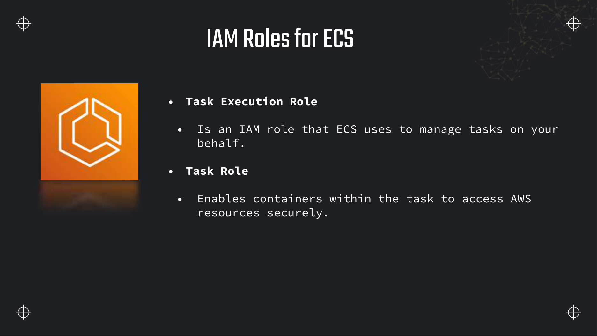
| Role | Who assumes it | Typical permissions |
|---|---|---|
| Task execution role | The ECS agent / Fargate infrastructure on your behalf | Pull image from ECR (ecr:GetAuthorizationToken, ecr:BatchGetImage); write logs to CloudWatch Logs; read secrets from Secrets Manager/SSM for container env injection |
| Task role | Your application code inside the running container | S3 read/write on pipeline buckets; redshift-data:ExecuteStatement; DynamoDB; Kinesis — whatever the ETL script needs at runtime via the SDK |
Network mode — awsvpc
ECS tasks support bridge, host, and awsvpc network modes. Fargate requires awsvpc — each task gets its own elastic network interface (ENI) with a private IP in your VPC subnets. That means:
- Security groups attach at the task level, not only the instance — fine-grained egress to Redshift, RDS, or S3 via VPC endpoints.
- Each task consumes an ENI; large clusters need enough IP addresses in the subnet (the /28 per task rule of thumb for dense Fargate).
awsvpcis the default for new task definitions and matches how Batch on Fargate and EKS pods with the AWS VPC CNI allocate IPs.
Service auto scaling and capacity providers
- Service auto scaling — target tracking on CPU or memory, or step scaling on CloudWatch alarms. A Kinesis consumer service scales task count with shard count or lag metrics.
- Capacity providers — link a cluster to EC2 Auto Scaling groups or Fargate. Mix
FARGATEandFARGATE_SPOTwith weights to run fault-tolerant batch tasks on Spot while keeping one On-Demand task for coordination. - Cluster auto scaling (EC2 launch type) — managed scaling on the ASG backing the cluster adds instances when tasks cannot be placed.
Example ECS task definition JSON
{
"family": "dea-etl-task",
"networkMode": "awsvpc",
"requiresCompatibilities": ["FARGATE"],
"cpu": "1024",
"memory": "2048",
"executionRoleArn": "arn:aws:iam::123456789012:role/ecsTaskExecutionRole",
"taskRoleArn": "arn:aws:iam::123456789012:role/deaEtlTaskRole",
"containerDefinitions": [
{
"name": "etl",
"image": "123456789012.dkr.ecr.us-east-1.amazonaws.com/dea-etl-job:latest",
"essential": true,
"logConfiguration": {
"logDriver": "awslogs",
"options": {
"awslogs-group": "/ecs/dea-etl",
"awslogs-region": "us-east-1",
"awslogs-stream-prefix": "etl"
}
},
"environment": [
{"name": "SOURCE_BUCKET", "value": "dea-lab-ab-4821"},
{"name": "SOURCE_PREFIX", "value": "raw/customers/"}
]
}
]
}Containerised ETL pipeline — build to warehouse
Amazon ECR
Amazon Elastic Container Registry (ECR) is AWS's fully managed Docker registry. Every container service on AWS — ECS, EKS, Batch, Glue custom images, SageMaker — pulls from ECR in the same region to avoid cross-region latency and data-transfer charges.
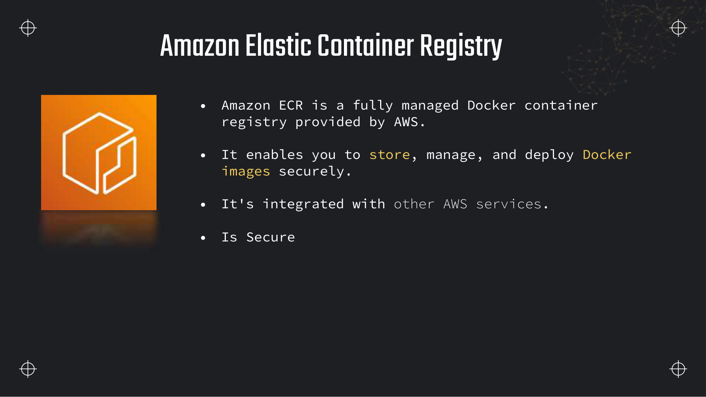
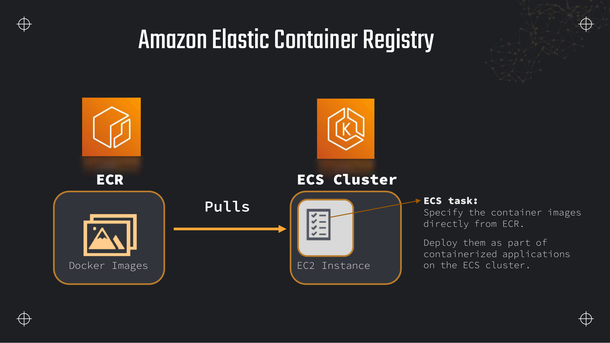
Features
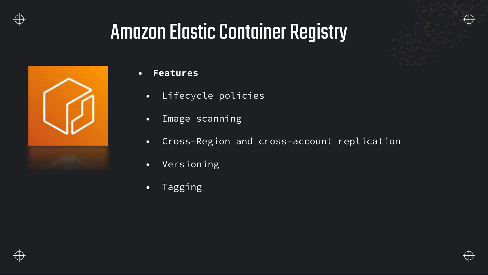
- Lifecycle policies — JSON rules like "keep last 10 tagged images, delete untagged after 7 days".
- Image scanning — on-push scan flags vulnerabilities; block deploy in CI if critical CVEs appear.
- Cross-region / cross-account replication — disaster recovery and shared platform accounts.
- Versioning and tagging — immutable layers; tags (
:v1,:latest) are mutable pointers. - Repository policies — resource-based policies allowing another account's ECS execution role to pull.
Public versus private repositories
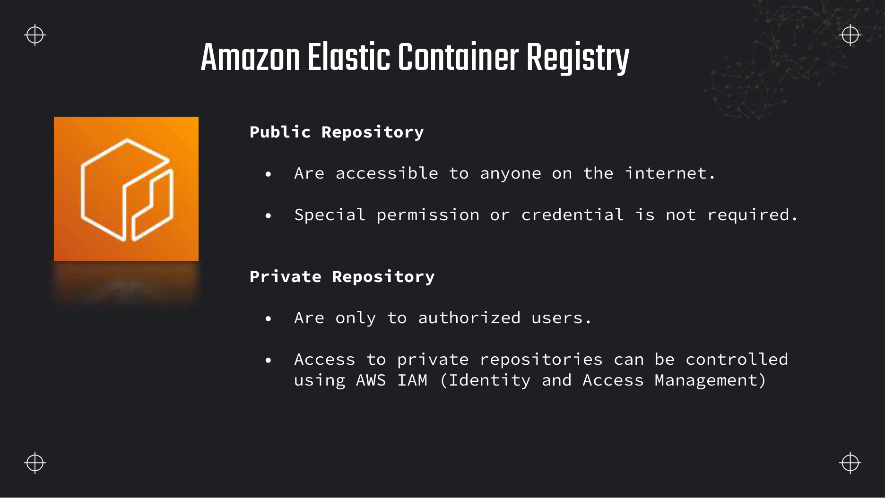
Amazon EKS
Kubernetes is the open-source standard for container orchestration at scale. Amazon Elastic Kubernetes Service (EKS) runs a managed control plane so you do not patch etcd or the Kubernetes API server. For data engineering, EKS matters because of EMR on EKS — run Spark jobs on shared Kubernetes infrastructure instead of dedicated EMR clusters — and because organisations already running ML platforms on K8s can colocate batch ETL there.
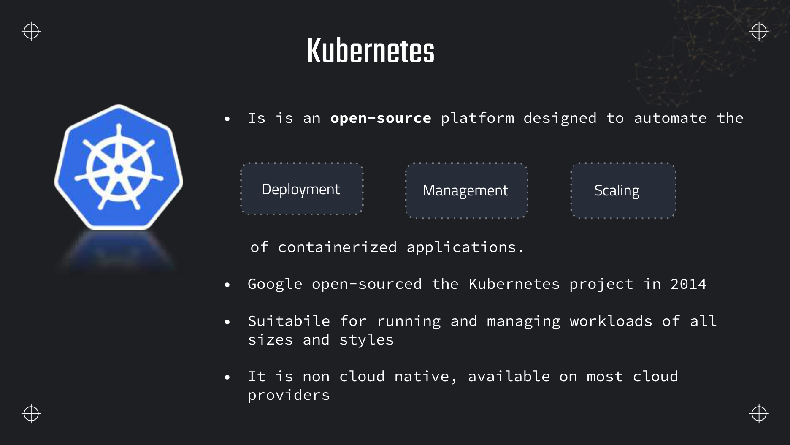
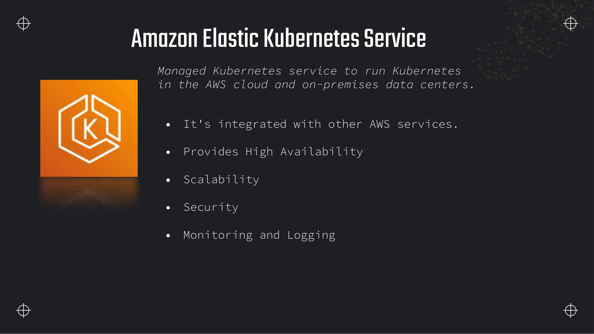
Architecture — control plane and compute
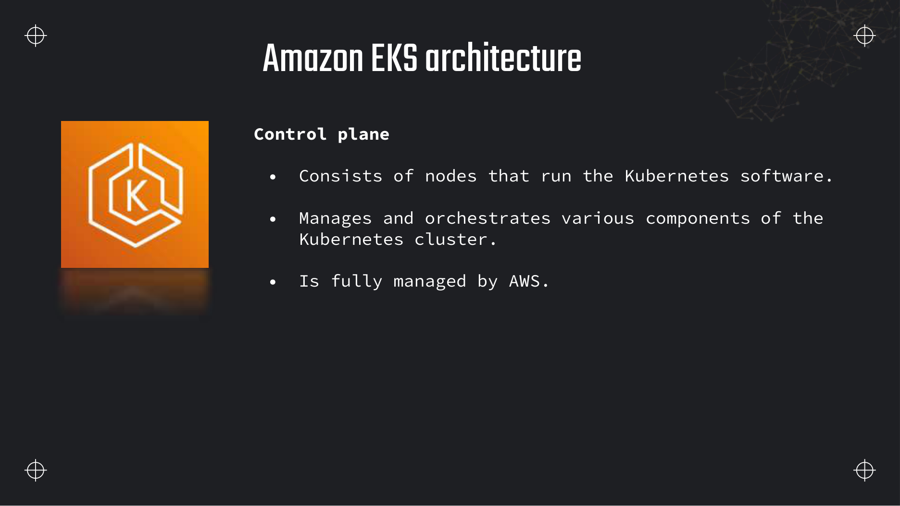
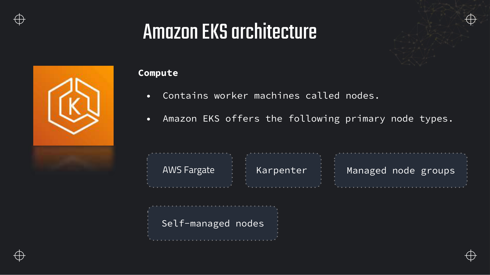
| Node type | Who manages nodes | Best for |
|---|---|---|
| Managed node groups | AWS creates/patches EC2; you choose instance types and scaling | Default choice — Spark executors, steady workloads |
| Fargate | AWS — serverless pods, no EC2 visible | Small jobs, least ops, per-pod billing |
| Karpenter | Karpenter provisioner launches right-sized EC2 on pending pods | Highly variable batch — EMR on EKS, ML training bursts |
| Self-managed nodes | You — full control over AMIs, kubelet, upgrades | Custom kernels, GPU drivers, compliance hardening |
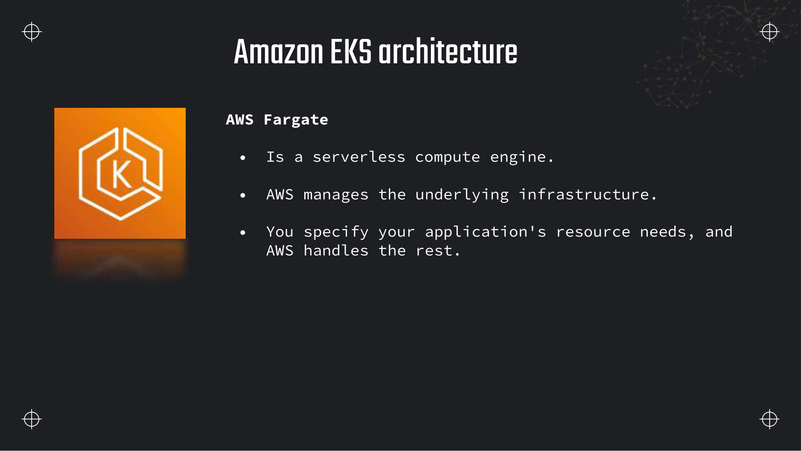
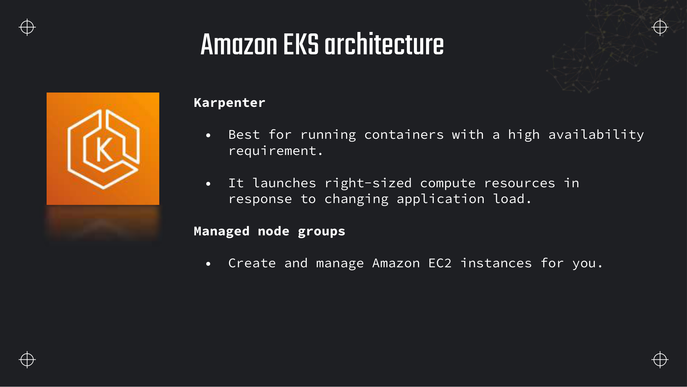
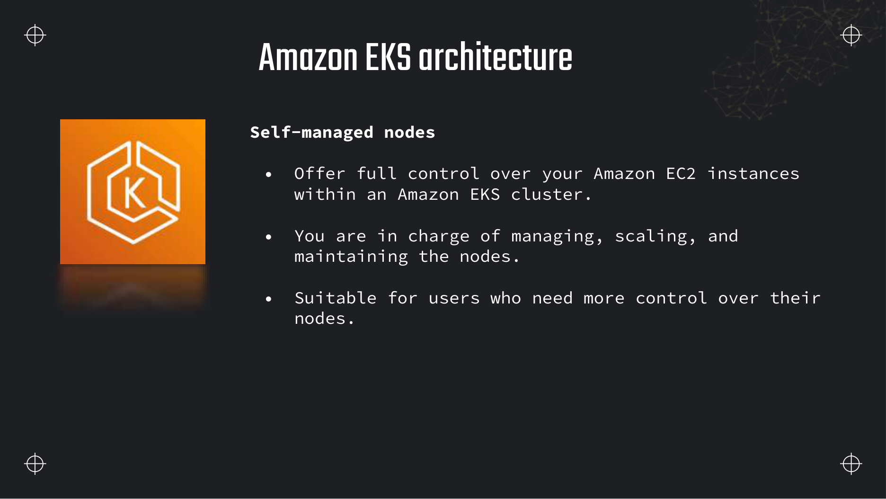
Deeper detail and exam edge cases
Fargate billing meters, ENI density limits, ECR cost controls, and the IAM and Kubernetes identity patterns the deck mentions but never numbers — the material that separates a passing service-selection answer from a production-ready one.
Limits and quotas that decide answers
| Limit | Value | Adjustable? | Why it matters |
|---|---|---|---|
| Containers per task definition | 10 | No (hard) | Sidecar pattern (log router + app + metrics) counts toward the cap — design multi-container tasks accordingly. |
| Fargate CPU / memory pairs | Fixed valid combinations only (e.g. 1 vCPU → 2–8 GB; 4 vCPU → 8–30 GB) | No — pick from AWS matrix | Task fails at registration if CPU and memory do not match an allowed pair; exam distractors often pair incompatible values. |
| Fargate ephemeral storage (default) | 20 GB | Yes — up to 200 GB at task definition | Large local Spark shuffle or temp files on Fargate need explicit storage increase; default is too small for multi-GB spills. |
| Fargate minimum billable duration | 1 minute per task start | No (hard) | Short RunTask jobs under 60 seconds still bill a full minute of vCPU and memory. |
| ENIs per EC2 instance (awsvpc on EC2 launch type) | Varies by instance type (e.g. t3.large ≈ 3 ENIs) | Yes — larger instance type | Each awsvpc task consumes one ENI; instance ENI quota caps task density regardless of free CPU/RAM. |
| ECS services per cluster | 5,000 (soft default) | Yes — quota increase | Rare on the exam; matters for microservice estates, not batch ETL. |
| ECR image tag immutability | Per-repository setting | Yes — enable at create or update | When enabled, pushing an existing tag fails — prevents accidental overwrite of :prod in CI/CD. |
| EKS control plane cost | ~$0.10 per hour per cluster (all Regions) | No — metered continuously | Cluster bills 24/7 even with zero pods; shared platform clusters amortise this across teams. |
| EKS Fargate — DaemonSets | Not supported | No (hard) | Node-level agents (log collectors, security daemons) require EC2 or managed node groups, not Fargate profiles. |
| Lambda timeout (container alternative threshold) | 15 minutes max | No (hard) | Jobs longer than 15 minutes must move to Batch, ECS RunTask, EKS, or Glue — not Lambda. |
| ECR image scan — enhanced | Uses Amazon Inspector | Yes — enable enhanced scanning per registry | Continuous CVE monitoring beyond basic on-push scan; adds Inspector charges per image. |
| Placement strategies on Fargate | Not applicable | N/A | Binpack and spread apply only to EC2 launch type — a common "why won't binpack work" trap. |
What you actually pay for
| Billed dimension | Unit | How to spend less |
|---|---|---|
| ECS Fargate compute | vCPU-second + GB-second (us-east-1 ~$0.04048/vCPU-hr + ~$0.004445/GB-hr); 1-minute minimum per task | Right-size CPU/memory pairs; use Fargate Spot for fault-tolerant batch; stop services when idle — no instance to "turn off", but running tasks bill continuously. |
| ECS EC2 launch type | EC2 instance hour whether tasks run or not | Cluster auto scaling + capacity providers; Spot instances for batch; binpack placement to fill instances before scaling out. |
| EKS control plane | ~$0.10 per cluster-hour | Consolidate dev/test onto shared clusters with namespace isolation; delete idle clusters. |
| EKS / ECS worker compute | EC2, Fargate, or Karpenter-provisioned instances | Karpenter or Cluster Autoscaler for variable Spark; Fargate only for small sporadic pods. |
| ECR storage | ~$0.10 per GB-month | Lifecycle policies to expire untagged images and keep last N tags; delete stale repos after migration. |
| ECR data transfer | Cross-Region pull incurs transfer; same-Region pull to ECS/EKS is free | Build and push in the same Region as the cluster; use cross-Region replication only for DR, not daily pulls. |
| ECR enhanced scanning | Amazon Inspector pricing per image | Enable on production repos only; basic scan-on-push for dev. |
| NAT Gateway (private subnet pulls without VPC endpoint) | ~$0.045/hr + ~$0.045/GB processed | ECR interface endpoint or pull from public subnet build agents; see Section 19 for S3 gateway endpoint on workers. |
Traps that catch people
- Task execution role for S3 access — Developers add S3 permissions to the execution role because "that's the ECS role". The execution role only pulls images, writes logs, and reads secrets for startup. Application S3 calls need the task role — AccessDenied at runtime despite a "correct-looking" task definition.
- Fargate CPU/memory mismatch — Setting 512 CPU units (0.5 vCPU) with 16 GB memory is invalid. Registration fails before any task launches. Always cross-check the Fargate compatibility matrix.
- Binpack on Fargate — Exam questions about placement strategies assume EC2 launch type. Fargate ignores binpack, spread, and constraints — AWS picks infrastructure.
- awsvpc ENI exhaustion — A c5.large with three ENI slots may host only two awsvpc tasks (one ENI reserved for the host). Scaling task count without upgrading instance type leaves tasks in PENDING.
- Confusing ECR with ECS — "Store and run containers" — ECR is storage only. Batch, ECS, EKS, and SageMaker pull from ECR; none of them replace a registry.
- DaemonSet on EKS Fargate — Fargate profiles cannot run DaemonSets. Logging agents that rely on DaemonSet pattern need EC2 node groups or sidecars in each pod.
- Spark on plain ECS — The exam answer for "Spark on Kubernetes" is EMR on EKS, not a DIY Spark container on ECS. ECS lacks Kubernetes-native Spark operator ecosystem.
- Immutable tag overwrite — CI pushes
:latesttwice; second push fails if immutability is on. Use unique tags per build (:build-4821) or disable immutability on dev repos only. - Service auto scaling vs cluster capacity — Service auto scaling adds tasks; it does not add EC2 instances. On EC2 launch type, tasks stay PENDING until cluster capacity providers scale the ASG — two separate mechanisms.
- Cross-Region image pull latency — Task definition references an ECR URI in eu-west-1 while the cluster runs in us-east-1. Pull works but adds cross-Region transfer charges and slow cold starts.
Troubleshooting playbook
| Symptom | Most likely cause | What to check / fix |
|---|---|---|
CannotPullContainerError on task start | Execution role missing ECR permissions or wrong image URI/Region | Verify ecr:GetAuthorizationToken, ecr:BatchGetImage on execution role; confirm image exists: aws ecr describe-images. |
| Container starts but S3 AccessDenied | Missing or wrong task role | Task definition taskRoleArn; role trust for ecs-tasks.amazonaws.com; S3 policy on task role, not execution role. |
| Tasks stuck in PENDING (EC2 launch type) | Insufficient CPU/RAM, ENI slots, or placement constraints unsatisfied | ECS console → Events tab; check container instance remaining resources and distinctInstance / memberOf constraints. |
| Tasks stuck in PENDING (Fargate) | Subnet has no available IPs or invalid CPU/memory pair | Subnet IP utilization in VPC console; validate Fargate-compatible CPU/memory in task definition. |
| Fargate task exits immediately with no logs | Missing log configuration or execution role CloudWatch permissions | logConfiguration in container definition; execution role needs logs:CreateLogStream, logs:PutLogEvents. |
EKS pod ImagePullBackOff | Node/instance role or Fargate pod execution role cannot pull from ECR | Node IAM role (EC2) or pod execution role (Fargate) ECR permissions; image pull secrets if using private external registry. |
| Spark job on EKS cannot reach S3 | Pod IRSA role missing S3 policy or no S3 VPC endpoint in private subnet | Service account annotation eks.amazonaws.com/role-arn; verify OIDC provider; add S3 gateway endpoint per Section 19. |
| ECR storage bill climbing | Untagged layers from CI builds accumulating | Lifecycle policy: expire untagged after 7 days, keep last 10 tagged images; run aws ecr describe-images --filter tagStatus=UNTAGGED. |
Production patterns
Data teams typically land on one of three tiers. AWS Batch on Fargate for queue-driven ETL array jobs — simplest scheduling, pay per job, no cluster to maintain. ECS Fargate services for always-on stream consumers or small API wrappers around pipeline triggers. EKS with EMR on EKS when Spark executors need Kubernetes-native scaling (Karpenter), shared infrastructure with ML platforms, or Helm-based operators already in the org.
Batch ETL on Fargate (intermittent)
- Push image to ECR in the same Region as the compute environment.
- Batch job definition references image URI; job queue on Fargate Spot for cost.
- Task role grants S3 and Redshift Data API; execution role handles ECR pull.
Spark on EKS (sustained or bursty)
- Shared EKS cluster; EMR on EKS virtual clusters submit Spark jobs.
- IRSA (IAM Roles for Service Accounts) or EKS Pod Identity for pod-level S3/KMS access.
- Karpenter or managed node groups scale executors; Fargate only for driver if small.
Anti-pattern: running EMR as a 24/7 cluster for one nightly job when EMR on EKS or Glue would scale to zero between runs. The cluster hour charge dominates; containers only win when utilization is shared or bursty enough to amortise EKS control-plane cost.
{
"apiVersion": "v1",
"kind": "ServiceAccount",
"metadata": {
"name": "spark-driver",
"namespace": "etl",
"annotations": {
"eks.amazonaws.com/role-arn": "arn:aws:iam::123456789012:role/SparkS3AccessRole"
}
}
}Where this fits with the rest of the exam
Containers are the compute layer when Lambda is too short and Glue/EMR is the wrong shape. They connect ingestion, transformation, and ops sections through image-based custom code.
- When Lambda is not enough: Section 5 — 15-minute and 10 GB limits push long Python ETL to Batch or ECS.
- Spark placement: Section 4 (serverless Spark), Section 12 (EMR clusters), Section 13 (EMR on EKS) — the exam asks which orchestrator, not just "use Spark".
- Custom Glue runtime: Section 4 — Glue custom containers pull from ECR; same registry pattern as ECS.
- Networking: Section 19 — awsvpc tasks and EKS pods consume subnet IPs; private subnets need S3 gateway endpoints.
- Security: Section 20 — task roles for S3/KMS; Secrets Manager for JDBC credentials injected at task start.
- Practice decisions: Section 21 — "container batch, no always-on cluster" → Batch; "Spark on Kubernetes" → EMR on EKS.
Interview questions
Answer each one out loud before opening it.
What is the difference between a Docker image and a Docker container?Fundamentals
An image is an immutable, read-only template built from a Dockerfile — layers stacked with code, runtime, and libraries. A container is a running process instantiated from that image, with a writable layer on top for runtime state. You can run many containers from one image; when the container stops, the writable layer is discarded unless committed (which is rare in pipelines).
In AWS terms, you push the image to ECR once; each ECS task, Batch job, or EKS pod creates a new container from it.
When would you choose a containerised ETL job over Lambda or Glue?Design
Choose containers when the job exceeds Lambda's 15-minute timeout or needs more than 10 GB memory, but is not a distributed Spark workload that Glue or EMR handles better. Examples: a 45-minute Python pandas transform, a proprietary binary, a JVM tool with a fixed heap, or a multi-step ETL with dependencies Glue's built-in runtimes lack.
Package as Docker → ECR → AWS Batch (simplest for batch), ECS RunTask, or SageMaker Processing. If the job is Spark-shaped and TB-scale, prefer Glue or EMR instead.
Explain the ECS task execution role versus the task role.Exam
The task execution role is assumed by the ECS infrastructure to set up the task: pull the image from ECR, create the log stream in CloudWatch, and read secrets/parameters injected as environment variables. The task role is assumed by your application code inside the container via the container credentials endpoint — it grants S3, DynamoDB, Redshift Data API, or whatever the ETL script calls.
Symptoms: "CannotPullContainerError" or no logs → execution role. AccessDenied on s3:GetObject from Python → task role.
Compare ECS Fargate and ECS on EC2 for a data pipeline.Comparison
Fargate — no instances to manage, pay per task vCPU/memory, automatic placement, ideal for sporadic or modest workloads and when "least operational overhead" is the exam qualifier. No placement strategies — AWS handles placement.
EC2 launch type — you manage the cluster capacity, can use Spot instances for 60–90% savings, choose GPU or high-memory instance types, and control placement with binpack/spread and constraints. Better for sustained high-volume batch where idle Fargate cost would exceed an always-warm Spot fleet.
What are ECS task placement strategies, and when do they apply?Architecture
Placement strategies (binpack, spread, random) choose which EC2 container instance runs a new task, after resource and constraint filtering. Binpack minimises wasted CPU/RAM; spread distributes for HA; random has no goal.
They apply only to the EC2 launch type, not Fargate. Placement order: CPU/memory/ports → constraints (distinctInstance, memberOf) → strategies.
ECS versus EKS — how do you decide?Comparison
Pick ECS when you want AWS-native simplicity, tight integration with ALB and IAM roles, and no Kubernetes operational burden. Pick EKS when you need Kubernetes portability, Helm charts, custom operators, existing K8s skills, or services like EMR on EKS that require Kubernetes.
Both can run on Fargate. Neither replaces Batch for queue-driven array jobs — Batch is the higher-level job scheduler on top of ECS.
What is awsvpc network mode and why does Fargate require it?Architecture
awsvpc assigns each task its own ENI and private IP in specified subnets. Security groups attach directly to the task, giving per-task network isolation and precise egress rules to Redshift, RDS, or VPC endpoints.
Fargate has no shared host network namespace — each task is isolated infrastructure, so awsvpc is mandatory. Plan subnet IP capacity: dense Fargate services consume many ENIs.
How does ECR integrate with ECS, EKS, Batch, and Glue?Fundamentals
All AWS container runtimes pull images from ECR using IAM-authenticated docker pull (or containerd equivalents). ECS task definitions and Batch job definitions reference the image URI. EKS pods reference it in the container spec. Glue custom containers register an ECR image for Spark or Python shell jobs.
Keep images in the same region as the compute to avoid cross-region transfer charges and pull latency. Use lifecycle policies to prune old tags.
What EKS node option would you use for bursty Spark workloads?Design
Karpenter or EMR on EKS's built-in managed scaling — both provision right-sized EC2 when pods pend, and scale down when jobs finish. Managed node groups work but scale in ASG increments, often leaving idle nodes. Fargate suits small jobs but gets expensive for large Spark executor fleets.
Self-managed nodes only when you need custom AMIs or kernel modules not supported on EKS-optimised images.
Hands-on practice
Free tier where possible. Delete everything at the end of each task.
-
Create a private ECR repository, build a minimal Python "hello ETL" Docker image locally, push it to ECR, and verify the image appears with a
ECR → Repositories → Create repositorylatesttag.aws ecr describe-imageslists your image digest and tag.Show stepsConsole + CLI
- Create repository
dea-etl-jobwith scan-on-push enabled. - Write a Dockerfile with
FROM python:3.11-slimandCMD ["python", "-c", "print('ETL ready')"]. - Build, tag, authenticate, and push using the commands in the Docker section above.
aws ecr create-repository --repository-name dea-etl-job --region us-east-1 docker build -t dea-etl-job . # tag, login, push as shown above aws ecr describe-images --repository-name dea-etl-job --region us-east-1Cleanup: delete the repository (force delete images) when finished. ECR storage is cheap but lifecycle policies are good practice.
- Create repository
-
Register an ECS Fargate task definition referencing your ECR image, then run a one-off task in a cluster with
ECS → Task definitions → Create → Fargateawsvpcnetworking and confirm CloudWatch Logs output.Task status
STOPPEDwith exit code 0; log stream shows "ETL ready".Show stepsConsole + CLI
- Create a cluster
dea-lab(Fargate only). - Create task definition from the JSON example — attach the default
ecsTaskExecutionRole. - Create a security group allowing egress; pick a private or public subnet with IP capacity.
- Run task → Networking → select subnet and security group.
aws ecs run-task \ --cluster dea-lab \ --launch-type FARGATE \ --task-definition dea-etl-task \ --network-configuration "awsvpcConfiguration={subnets=[subnet-abc],securityGroups=[sg-abc],assignPublicIp=ENABLED}"Cleanup: stop/delete any running tasks; deregister task definition revisions; delete cluster. Fargate bills per second while tasks run.
- Create a cluster
-
Enable ECR image scanning on your repository, push a new image tag, and review scan findings in the console.
ECR → Repository → Scan on pushImage scan status completes with a findings summary (even base Python images have informational CVEs).
Show stepsConsole
- Edit repository settings → enable Scan on push.
- Push
:v2tag with any Dockerfile change. - Open the image → Scan results → review severity counts.
Cleanup: same as task 1 — delete repository when done.
Recap
- Docker: Dockerfile → image (immutable) → container (running instance) → registry (ECR/Docker Hub).
- Containers fit ETL that exceeds Lambda timeout but is not Spark-scale — Batch, ECS, SageMaker Processing, Glue custom containers.
- ECS: cluster, task definition, task (batch), service (long-running), container agent on EC2.
- Launch types: EC2 (you manage, Spot, placement strategies), Fargate (serverless), external (on-prem).
- Placement order: CPU/memory/ports → constraints (distinctInstance, memberOf) → strategies (binpack, spread, random). EC2 only.
- Task execution role = ECR pull + logs + secrets. Task role = application AWS API access.
- Fargate requires awsvpc — one ENI per task; plan subnet IPs.
- ECR: lifecycle policies, scanning, replication; private repos for production images.
- EKS: managed control plane; compute via managed node groups, Fargate, Karpenter, or self-managed.
- ECS = simpler AWS-native; EKS = Kubernetes/EMR on EKS; Fargate = launch type for both.